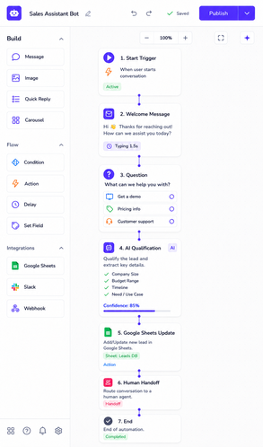
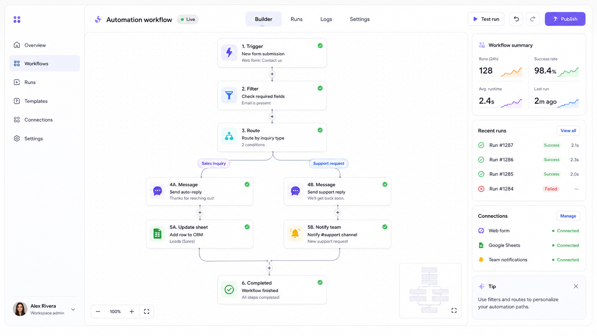
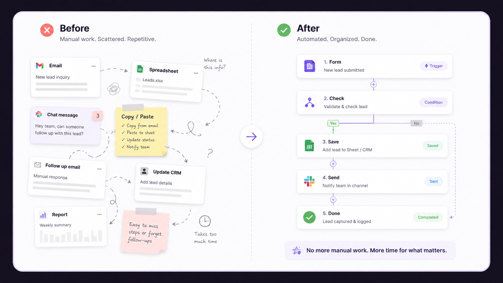

Lead capture
New forms, messages, or requests get organized and sent to the right place.
Input
Check
Send
Automation Service
I build practical automations for small businesses, creators, and service providers that move information, send alerts, organize requests, handle follow-ups, and remove the manual steps that keep repeating every week. I can work with n8n, Zapier, Make.com, Manychat, Notion, Google Sheets, and the apps you already use.
The page is about the workflow, not the tool. If someone searches for an n8n expert, Zapier expert, Manychat automation, Make.com workflow help, or business workflow support, this page explains the kind of system I build.
What I Automate
Automation is useful when the same small task keeps stealing your time. I turn those repeated steps into clean flows that are easier to manage, test, and trust.
New forms, messages, or requests get organized and sent to the right place.
People get confirmations, reminders, replies, or next steps without repeated typing.
Important updates are collected and sent before you need to search for them manually.
Messy requests, tasks, ideas, and client notes become simple organized views.
Proof / Screenshots
Use this part for real visuals: a workflow map, a dashboard screenshot, an alert email, or a before-after view. Visitors can understand the service faster when they see what changed.



Simple Idea
It should not make your work heavier. It should remove the little repeated actions: copying details, checking messages, updating lists, sending the same reply, or building the same report again.
Example Space
This can become a short story about a booking flow, lead tracker, message automation, report email, or a clear before-after comparison.
Workflow Proof
A workflow screenshot helps people understand what happens after a form, message, booking, or request comes in. This section can show trigger, condition, action, and final output.

Before / After
Use this part for a visual comparison: before automation, work is manual and scattered; after automation, the lead, report, reply, or task moves to the right place.

Build Process
I check the workflow with normal mistakes: missing fields, duplicate requests, wrong inputs, and broken steps. That way the system is not just pretty. It actually works when real people use it.
Define the trigger, action, and final result.
Create the simplest useful workflow.
Check mistakes, missing data, and repeated requests.
Add alerts, cleanup, and small upgrades.
Automation Ideas
Pricing Preview
Short version only. Open the full pricing page for the complete package details, notes, and payment direction.
One simple automation for a form, message, reminder, or alert.
Ongoing checks, fixes, small improvements, and workflow support.
Best when the automation needs more tools, logic, or testing.